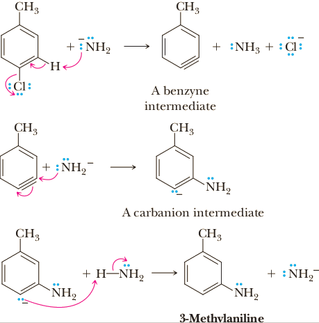

Nucleophilic aromatic substitution
One of the important chemical characteristics of aryl halides is that they undergo relatively few reactions involving the carbon-halogen bond. Aryl halides, for example, do not undergo substitution by either of the SN1 or SN2 pathways that are characteristic of nucleophilic aliphatic substitutions. Although aromatic substitution reactions usually occur by an electrophilic mechanism, aryl halides that have electron-withdrawing substituents can also undergo a nucleophilic substitution reaction, under certain conditions but by mechanisms quite different from those for nucleophilic aliphatic substitutions. Nucleophilic aromatic substitution: A reaction in which a nucleophile, most commonly a halogen, on an aromatic ring is replaced by another nucleophile.
Nucleophilic aromatic substitution reactions are far less common than electrophilic aromatic substitution reactions and have only limited application for the synthesis of organic compounds. We study these reactions not only for their synthetic usefulness but also for the additional insights they give us into the unique chemical properties of aromatic compounds.
Nucleophilic Substitution by Way of a Benzyne Intermediate
An apparent exception to the generalization about the lack of reactivity of aryl halides to nucleophilic substitution is an early industrial process for the synthesis of phenol from chlorobenzene. When heated at 300°C under high pressure with aqueous NaOH, chlorobenzene is converted to sodium phenoxide. Neutralization of this salt with aqueous acid gives phenol.

|
+ 2NaOH | H2O ⟶ pressure, 300 °C |
|
+ NaCl + H2O |
In later technological developments, the discovery was made that chlorobenzene can be hydrolyzed to phenol by steam under pressure at 500°C. Each of these reactions appears to involve nucleophilic substitution of -OH for -Cl on the benzene ring. However, this reaction is not as simple as it might seem, as is illustrated by the reaction of substituted halobenzenes with NaOH. For example, o-chlorotoluene under these conditions gives a mixture of 2-methylphenol (o-cresol) and 3-methylphenol (m -cresol).
|
|
NaOH, heat, pressure ⟶ 2. HCl, H2O |
(o-Cresol) |
+ |

(m-Cresol) |
The same type of reaction can be brought about by the use of sodium amide in liquid ammonia. Under these conditions, for example, p-chlorotoluene gives a mixture of 4-methylaniline (p-toluidine) and 3-methylaniline (m-toluidine) in approximately equal amounts.
|
|
NH3(l) ⟶ -33 °C |

(p-Toluidine) |
+ |
(m-Toluidine) |
+ NaCl |
The difference in this reaction compared with other substitution reactions we have dealt with so far is that the entering group appears not only at the position occupied by the leaving group but also at a position adjacent to it. To account for these experimental observations, it has been proposed that an elimination of HX occurs to form a benzyne intermediate that then undergoes nucleophilic addition to the triple bond to give the products observed.
Mechanism Nucleophilic Aromatic Substitution via a Benzyne Intermediate
Step 1: Take a proton away and simultaneously break a bond to make stable molecules or ions. Dehydrohalogenation of the benzene ring gives a benzyne intermediate. A reactive intermediate formed by β-elimination from adjacent carbon atoms of a benzene ring and having a triple bond in the benzene ring. The second π bond of the benzyne triple bond is formed by weak overlap of coplanar sp2 orbitals on adjacent carbons.
Step 2: Make a new bond between a nucleophile and an electrophile. Nucleophilic addition of amide ion to a carbon of the benzyne triple bond gives a carbanion intermediate. Addition to either carbon of the triple bond is possible.
Step 3: Add a proton. Proton transfer from ammonia to the carbanion intermediate gives one of the observed substitution products and generates a new amide ion.
The bonding in a benzyne intermediate, and also the reason for its extremely reactive nature, can be pictured in the following way. According to molecular orbital theory, the benzene ring retains its planarity, π bonding, and aromatic character. The adjacent sp2 orbitals formerly bonding to a halogen and a hydrogen now overlap to form the second π bond of the benzyne triple bond. The problem is that the atomic orbitals forming this π bond are not parallel as in acetylene and unstrained alkynes but, rather, lie at an angle of approximately 120° to the bond axis connecting them. Consequently, the overlap between these orbitals is reduced. Reduced overlap, in turn, means a weaker and more reactive p bond. Therefore, the second π bond of the benzyne intermediate undergoes addition very readily to form two new and stronger σ bonds. The relatively high energy of the benzyne intermediate is presumably why such high temperatures are required for these reactions.
Nucleophilic Substitution by Addition-Elimination
Aromatic halides are normally quite inert to the types of nucleophiles that readily displace halide ions from alkyl halides. However, when an aromatic compound contains strong electron-withdrawing nitro groups ortho or para (or both) to the halogen, nucleophilic aromatic substitution occurs quite readily. For example, when 1-chloro-2,4-dinitrobenzene is heated at reflux in aqueous sodium carbonate followed by treatment with aqueous acid, it is converted in nearly quantitative yield to 2,4-dinitrophenol.
|
|
Na2CO3, H2O ⟶ 100 °C |
|
HCl, H2O ⟶ |

|
One application of this reaction is the synthesis of 2,4-dinitrophenylhydrazine, a reagent that was once commonly used to prepare derivatives of aldehydes and ketones (Section 16.8B).
|
|
+ | H2NNH2 Hydrazine |
⟶ |
|
+ HCl |
This type of nucleophilic aromatic substitution for halogen has been studied extensively, and it has been determined that reaction occurs in two steps: nucleophilic addition followed by elimination. For the majority of reactions of this type, addition of the nucleophile in Step 1 is the slow, rate-determining step. Elimination of halide ion in Step 2 gives the product. This reaction thus resembles reactions of carboxylic acid derivatives in that it proceeds by an addition-elimination mechanism rather than by direct substitution.
Mechanism Nucleophilic Aromatic Substitution by Addition-Elimination
Step 1: Make a new bond between a nucleophile and an electrophile. The nucleophile adds to the aromatic ring at the carbon bearing the halogen. This addition places a negative charge on the ring, which is stabilized by a resonance interaction with the nitro or other strongly electron-withdrawing groups in the ortho or para positions. Such intermediates are named Meisenheimer complexes after the German chemist who first characterized them. Note that nitro groups on both ortho and para positions participate in delocalization of the negative charge in the complex.
Step 2: Break a bond to give stable molecules and ions. Elimination of halide ion regenerates the aromatic ring and gives the observed product.